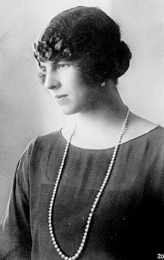

Yad Vashem (ebraică:יד ושם „monument și nume”) este denumirea Memorialului Victimelor Holocaustului, instituție oficială a Statului Israel, constituită în 1953 la Ierusalim, print-o hotărâre a Knesset-ului
Numele a fost ales după versetul biblic din Isaia 56,5: „Le voi da în casa Mea și înăuntrul zidurilor Mele un nume și un loc mai de preț decât fii și fiice; le voi da un nume veșnic și nepieritor“. (Vulgata de Sf. Ieronim, cca. AD 405: „dabo eis in domo mea et in muris meis locum et nomen melius a filiis et filiabus nomen sempiternum dabo eis quod non peribit”).
-
Yad Vashem cuprinde mai multe secții, între care:
- Muzeul Victimelor Holocaustului - muzeu istoric cu o arhitectură aparte, unde sunt expuse obiecte, relicve, o galerie de fotografii, etc. rămase de la victimele Holocaustului;
- "Fiecare om are un nume" - o cartotecă destinată de a conține datele personale - în măsura în care s-au putut aduna - despre cele aproape 6 milioane de evrei, victime ale Holocaustului, între care un milion și jumătate de copii;
- Institutul de Studii și Cercetări ale Holocaustulu;
- Biblioteca Holocaustului;
- Comisia de acordare a titlului, diplomei și medaliei Drept între popoare. Această comisie este condusă de un judecător de la Tribunalul Suprem al Israelului și are drept sarcină să comemoreze, să onoreze și să publice numele ne-evreilor -(creștini, musulmani, agnostici, atei și de alte confesiuni, convingeri religioase sau apartenențe etnice), care, riscându-și viața, familia și averea, au salvat viața unor evrei în timpul prigoanei fasciste.
Drept între popoare
„Drept între popoare” (ebraică : חסיד אומות העולם Hasid Umot HaOlam) este un titlu acordat în viață sau post mortem, de statul israelian prin intermediul institutului Yad Vashem, pe baza unei legi speciale a Knesset-ului (parlamentul israelian), martirilor și eroilor ne-evrei care, în vremea Holocaustului, în condiții vitrege, când purificarea etnică, jaful, crima și oportunismul deveniseră politică de stat, considerate naționalism și răsplătite cu medalii și onoruri - și-au riscat viața, familia și averea pentru a-și păstra omenia și iubirea aproapelui, ajutându-i și salvându-i pe evreii prigoniți.
Shelomo Selinger - Monumentul celor Drepți între popoare la Memorialul Yad Vashem, Ierusalim
Selectarea laureaților
Propunerile pentru acordarea acestui omagiu sunt primite din toată lumea și analizate de o comisie condusă de un judecător de la „Înaltul Tribunal de Dreptate” (Înalta Curte de Casație israeliană). Cei recunoscuți ca „Drepți între popoare”, primesc - în afară de titlu - o diplomă și o medalie pe care este încrustat numele laureatului, care se mai înscrie și pe „Zidul de onoare” din „Grădina Drepților între popoare”, lângă muzeul Institutului Yad Vashem din Ierusalim. Acest titlu conferă cetățenia de onoare a Statului Israel (inclusiv cazare, pensie, reduceri de taxe - la primărie, la serviciile medicale, etc., pentru cei care vin să locuiască în Israel). Însemnele distincției sunt conferite laureatului sau urmașilor săi, la Ierusalim, sau la Ambasada Israelului din statul respectiv, într-un cadru festiv, în prezența onor reprezentanți oficiali.
Până la 1 ianuarie 2007, acest titlu a fost decernat unui număr de 21 758 de laureați.
Desigur că au mai fost și alți oameni care ar fi corespuns criteriilor stabilite de comisia de la Yad Vashem de acordare a titlului de „Drept între popoare”. Recunoașterea lor depinde, în bună măsură, de existența mărturiilor pertinente, directe și de perseverența martorilor supraviețuitori de a face demersurile necesare pentru alcătuirea unui dosar convingător. Adesea, cei salvați au murit, sau au fost într-un grad avansat de invaliditate, sau au suferit de sindromul de amnezie post-traumatică (persoane care au suferit mari traume psihice și fizice prelungite în timp intră, ca o reacție de apărare într-o amnezie cronică, totală sau parțială) sau, s-au rezumat la exprimarea recunoștinței față de binefăcători în mod personal și direct, etc.

Diploma Drept între popoare acordată D-nei Maria Kotarba, Polonia
Numele celor Drepţi între popoare maghiari, încrustate în marmoră în Parcul Wallenberg din Budapesta
Lista cetățenilor români distinși cu titlul „Drept între Popoare”
Viorica Agarici (1886-1979), preşedinta filialei locale a Crucii Roşii din Roman în timpul celui de-al doilea război mondial.

Regina Mamă Elena (n. 2 mai 1896 la Atena, prinţesă de Grecia şi Danemarca, d. 28 noiembrie 1982 la Lausanne, Elveţia). Ajutorul trimis de dânsa în 1942 a salvat vieţile a mii de evrei din Transnistria. În 1943 şi la începutul lui 1944, Regina Mamă Elena a ajutat la întoarcerea a mii de evrei care rămăseseră în viaţă, inclusiv a mii de orfani evrei, din Transnistria. În anul 1993 Statul Israel şi Institutul Yad Vashem i-au conferit post-mortem Titlul şi Medalia Dreaptă Între Popoare.
Constantin Karadja,prinţ, membru de onoare al Academiei Române a fost un diplomat român (între 1931-1941, Consul General al României la Berlin şi între anii 1941-1944, directorul departamentului consular în Ministerul de Externe la Bucureşti) care a salvat de deportare şi exterminare peste 51.000 de persoane din Germania, Franţa, Ungaria şi Grecia acordându-le paşapoarte şi vize româneşti.
Áron Márton (1896-1980), episcop romano-catolic de Alba Iulia. În data de 18 mai 1944 a ţinut o predică în Biserica Sf. Mihail din Cluj în care a luat apărarea evreilor.
Avocatul dr. Traian Popovici (n. 17 octombrie 1892, satul Ruşii Mănăstioarei, pe atunci în Ducatul Bucovinei, Austro-Ungaria; d. 4 iunie 1946, satul Colacu, com. Fundu Moldovei, judeţul Suceava) a fost primar al oraşului Cernăuţi în timpul celui de-al Doilea Război Mondial. A salvat de la deportare 20.000 de evrei din Bucovina.